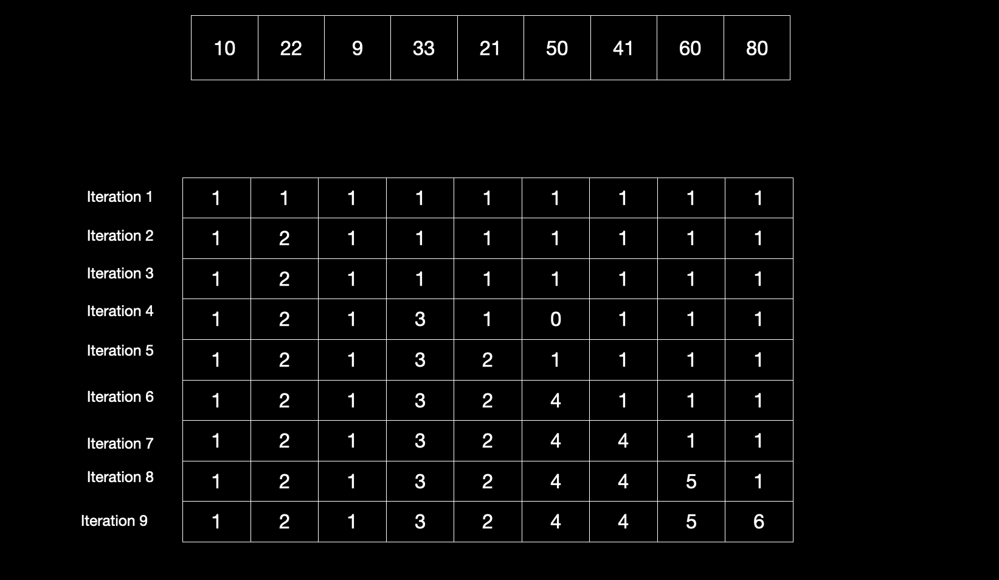

Longest Increasing Subsequence
-
Problem
Given a sequence, find the longest subsequence such that its elements are sorted in increasing order.
Note: This subsequence need not be contiguous (Elements are not required to be contiguous within the original sequence) or unique.
- Example: Given sequence: [1, 9, 5, 13, 3, 11, 7, 15, 2, 10, 6, 14, 4, 12, 8, 16]. Its longest increasing subsequence [1, 3, 7, 10, 12, 16] , [1, 5,7, 10, 12, 16] or [1, 5, 7, 10, 14, 16].
-
Solution
-
Starting from the first element of the sequence, we have two possibilities for each element.- Do not include the current element in LIS and recur for remaining elements
- Include the current element in LIS if it is greater than the previous element in LIS and recur for the remaining items.
- At each step return the maximum of the values obtained in both cases. If you reach the end of sequence return 0.
-
Recursive formula:
`L(i)=1+max(L(j))` `0 < j < i`
`L(i)=1` if no such `j` exists
Explanation of the above formula : `L(i)` is the length of the longest subsequence ending at `i^(th)` element of the array. Fint the maximum length of the subsequence which ends at an index `j` which is less than `i` .If `i^(th)` element can be a part of it, update `L(i)` as `1+L(j)` otherwise put 1 since the subequence in this case contains only one element `i.e.` the `i^(th)` element.
-
L[i], for each 0 <= i < n, which stores the length of the longest increasing subsequence of subarray arr[0…i] that ends with arr[i]. To calculate L[i], consider LIS of all smaller values of i (say j) already computed and pick maximum L[j], where arr[j] is less than the current element arr[i].

lis(A[1..n]):
Array L[1..n]
(L[i] = value of LIS ending at i)
for i = 1 to n do
L[i] = 1
for j = 1 to i − 1 do
if (A[j] < A[i]) do
L[i] = max(L[i], 1 + L[j])
return L
main(A[1..n]):
L = lis(A[1..n])
return the maximum value in L